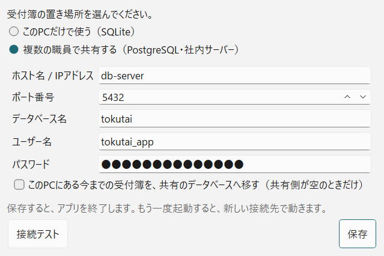
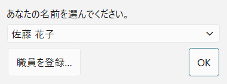
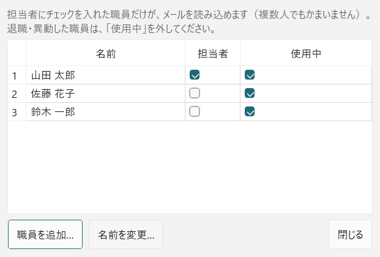

特退金脱退 処理漏れ防止アプリ（v1.2.0）
インストールマニュアル
管理者がサーバーと Microsoft 365 を準備し、各PCにアプリを入れて、設定するまでの手順です。毎日の使い方は 操作マニュアル を見てください。
※ ホスト名・パスワードなどは見本です。実際の値に置き換えてください。
1全体の流れ
このアプリは、Outlook に届く案件メールから受付簿を作ります。使い方は2通りです。
| 使い方 | 受付簿の置き場所 | 向いている場合 |
|---|---|---|
| 1台で使う | そのPC（SQLite） | 1人（1台）で使う。サーバーは要りません |
| 複数の職員で共有する | 社内の PostgreSQL サーバー | 複数のPCの職員が、同じ受付簿を見て記録する。メールを読む人（担当者）を決める |
① 管理者の準備Microsoft 365 にアプリを登録。共有するときは、PostgreSQL も用意（2章）
② 各PCにインストールインストーラーを取得し、本物か確かめて実行（3章）
④ 動作の確認チェックリストで確かめる（6章）
1.1必要なもの
| 項目 | 内容 |
|---|---|
| PC | Windows 10 / 11（64ビット）。管理者権限は要りません（利用者のフォルダに入ります） |
| メール | Microsoft 365 の Outlook（案件メールが届くアカウント） |
| Microsoft 365 の管理者 | アプリの登録と、権限への同意を行える人（2.1） |
| 共有するとき | PostgreSQL のサーバー（社内ネットワーク）と、その管理者 |
| 通信 | Microsoft 365 への接続。新しい版の確認のため、GitHub（github.com）への接続も使います（確認は止められます） |
2管理者の準備
2.1Microsoft 365 にアプリを登録する
アプリが Outlook のメールを読み・送るために、Microsoft Entra ID にアプリを1つ登録します。組織で1回だけ行い、取得した2つの値を、各PCの設定に入れます。
- Microsoft Entra 管理センター（
entra.microsoft.com）に、管理者でサインインし、「アプリの登録」→「新規登録」を開きます。 - 名前（例: 特退金脱退 処理漏れ防止）を入れ、サポートされるアカウントの種類は「この組織ディレクトリのみ」を選びます。
- リダイレクト URI は、種類を「パブリック クライアント／ネイティブ（モバイルとデスクトップ）」にして、
http://localhostと入れ、登録します。 - 登録後の「API のアクセス許可」→「アクセス許可の追加」→「Microsoft Graph」→「委任されたアクセス許可」で、次の2つを追加します。
権限 用途 Mail.Read指定したフォルダのメールの読み取り Mail.Send管理職への警告メールと、保険会社への催促メールの送信（サインインした本人として送る） - 組織の設定で、利用者が自分で同意できないときは、「（組織名）に管理者の同意を与えます」を押して、同意します。
- アプリの「概要」に出る「ディレクトリ（テナント）ID」と「アプリケーション（クライアント）ID」を控えます（4章・5章で、各PCに入れます）。
権限の範囲に注意どちらの権限も、サインインした利用者のメールボックス全体が対象になります（フォルダ単位では絞れません）。メールを読むのは、設定したフォルダだけですが、権限の範囲は、利用部門に説明して、了解を得てください。
Entra 管理センターの画面の名称は、変わることがあります。見つからないときは、Microsoft の最新の案内を確認してください。
2.2Outlook のフォルダを用意する
- 案件メール（件名に「特退金脱退案件作成」「特退金制度申し込み」を含むもの）が入るフォルダを、メールを読む人（担当者）の Outlook に作ります（例: 「特退金」）。
- 受信ルールで、案件メールをそのフォルダへ振り分けておきます。
- このフォルダの名前を、アプリの設定の「Outlook のフォルダ名」に入れます。
2.3PostgreSQL を用意する（共有するとき）
1台で使うときは、この節は飛ばします。共有するときは、サーバー管理者が、次を行います。
既存のデータベースとは分けてくださいほかのシステムが使っているデータベースには入れず、特退金用の新しいデータベースと専用ユーザーを作ります。表の名前が重なると、双方のデータを壊すおそれがあります。管理者（
postgres）のユーザーを、アプリに使わせないでください。- サーバーに、管理者で接続します（例:
psql -h サーバー名 -U postgres）。 - 専用のユーザーと、空のデータベースを作ります（パスワードは、実際に決めた値に置き換えます）。
CREATE ROLE tokutai_app WITH LOGIN PASSWORD '（決めたパスワード）'; CREATE DATABASE tokutai OWNER tokutai_app ENCODING 'UTF8'; - 各PCから、サーバーのポート（既定は 5432）に接続できるようにします。サーバーの
pg_hba.confに、利用するPCのネットワークからの接続を許可する行を足し、設定を読み込み直します。
サーバーのファイアウォールで、ポート 5432 を、社内から開けておきます。# 例: 社内ネットワーク 192.168.0.0/24 から、tokutai に、tokutai_app で接続を許可 host tokutai tokutai_app 192.168.0.0/24 scram-sha-256 - 管理者が、次の4つの値を、利用者（各PCの設定をする人）に伝えます: ホスト名（または IPアドレス）／ポート／データベース名（
tokutai）／ユーザー名（tokutai_app）とパスワード。
- 表は、アプリが最初の接続で自動で作ります。管理者が表を作る必要はありません（そのため、ユーザーは、そのデータベースの所有者にします）。
- バックアップは、サーバー側で取ります（例:
pg_dumpを、毎日の予定で実行）。アプリは、共有の受付簿のバックアップを取りません。
3各PCにインストールする
- GitHub の Release（https://github.com/mozu93/tokutaikin/releases）から、最新の
TokutaiApp-Setup-<版>.exeと、TokutaiApp-Setup-<版>.exe.sha256を取得します。 - 実行する前に、ファイルが本物か確かめます（下の囲みを参照）。
TokutaiApp-Setup-<版>.exeをダブルクリックし、画面の案内に従って進めます（言語は日本語です。管理者権限は要りません）。- 「デスクトップにショートカットを作る」は、必要に応じて、チェックを入れます。
- 完了すると、アプリが起動します。起動したら、4章（1台で使う）か、5章（共有する）に進みます。
実行する前に、ファイルが本物か確かめますこのインストーラーには、署名がないためです。
- 取得は、必ず上の公式の Release から行います。
- 取得したフォルダで、PowerShell を開き、次を実行します（
<版>は、実際の版に置き換えます）。
Get-FileHash .\TokutaiApp-Setup-<版>.exe -Algorithm SHA256 - 表示された値が、
.sha256ファイルの値と一致したときだけ、実行します。一致しないときは、実行せず、管理者に相談してください。 - 値が一致したうえで、Windows の画面に「WindowsによってPCが保護されました」と出たときは、「詳細情報」を押し、「実行」を選びます。
| 項目 | 内容 |
|---|---|
| 入る場所 | %LOCALAPPDATA%\Programs\TokutaiApp（利用者ごと。管理者権限は不要） |
| ショートカット | スタートメニュー（と、選んだ場合はデスクトップ） |
| 自動起動 | 初回の起動で、Windows 起動時に自動で起動するよう登録されます（設定で切り替えられます） |
| 常駐 | 画面を閉じても、トレイ（画面右下）に常駐します。終了は、トレイのアイコンを右クリックして「終了」 |
4初期設定（1台で使うとき）
受付簿は、そのPCに置きます（今までと同じです）。
- アプリの「ファイル」→「設定」を開きます。
- 「接続」に、2.1 で控えたテナントID・クライアントIDと、2.2 のOutlook のフォルダ名を入れます。
- 「通知」に、警告メールを受け取る管理職の宛先を入れます（2名まで）。
- 「接続テスト」を押し、Microsoft にサインインします。「フォルダが見つかりました」と出れば成功です。
- 保存します。

保険会社への催促メールを使うときは、宛先などを設定します（操作マニュアル 6章）。最初は、宛先を自分のアドレスにして試してください。
5共有の設定（複数の職員で使うとき）
先に、2.3 でデータベースを用意してください。次の設定を、各PCで行います。
5.1接続先を設定する
- アプリの「ファイル」→「データの共有設定」を開きます（はじめて起動するPCでは、起動時に、同じ画面が出ます）。
- 「複数の職員で共有する（PostgreSQL・社内サーバー）」を選び、管理者から聞いたホスト名・ポート・データベース名・ユーザー名・パスワードを入れます。

「データの共有設定」。パスワードは、このPCに暗号化して保存されます。 - 「接続テスト」で「接続できました」と出たら、「保存」を押します。アプリが終了するので、もう一度起動します。
今までの受付簿を引き継ぐときは、最初の1台だけ今まで1台で使っていたPCでは、「このPCにある今までの受付簿を、共有のデータベースへ移す」にチェックを入れて保存します（案件・取り込み済みメール・通知履歴を写します）。共有側に案件がすでにあるときは、二重に移しません。ほかのPCは、チェックを入れず、接続だけ設定します。
5.2職員を登録し、担当者を決める
- 起動すると、職員を選ぶ画面が出ます。最初の1人は、「職員を登録」で、自分の名前を追加します。

- 「ファイル」→「職員の管理（担当者マーク）」で、ほかの職員も登録できます。

- メールを読み込む人にだけ、「担当者」のチェックを入れます。担当者のチェックがある職員だけが、メールの取り込み・管理職への警告メール・保険会社への催促メールを行います。
- 担当者のPCだけ、「ファイル」→「設定」で、4章と同じ「接続」（テナントID・クライアントID・フォルダ名）を入れ、「接続テスト」でサインインします。担当者ではない職員の設定画面には、「接続」は出ません。
注意
- 職員の選択にはパスワードがありません。担当者のチェックは、うっかり別の人がメールを読み込まないための印で、なりすましを防ぐものではありません。
- 担当者は1人にすることをお勧めします（複数人にすると、同時に更新が重なったとき、メールが重なることがあります）。
- 警告の日数・管理職の宛先などは、全員で共有され、1人が変えると全員に反映されます。
共有の使い方の詳細は、操作マニュアル 11章を見てください。
6動作の確認
設定したら、次を確かめます。
| 確認すること | 期待する結果 |
|---|---|
| アプリが起動する | メイン画面が開き、トレイにアイコンが出る |
| 接続テスト（担当者のPC） | 「フォルダが見つかりました」と出る |
| メールの取り込み（担当者のPC） | 「今すぐ更新」で、案件が一覧に入る。下の「最終更新」の時刻が変わる |
| 警告メール | 最初は、管理職の宛先を自分のアドレスにして、期限を過ぎた案件があるときに、メールが届く |
| 共有（共有するとき） | 別のPCで案件を記録し、もう1台で「最新の情報に更新」を押すと、記録が見える |
| 担当者以外の画面（共有するとき） | ボタンが「最新の情報に更新」になり、メールの取り込みはしない |
| 自動起動 | Windows を再起動すると、アプリが自動で起動する |
本番の宛先に、試しのメールを送らないでください警告メールと催促メールは、実際の宛先（管理職・保険会社）に届きます。確認が終わるまで、宛先は自分のアドレスにしておき、問題がなければ、本来の宛先に直します。
7更新とアンインストール
7.1更新
- 新しい版が公開されると、アプリの画面上部に、青いバナーと「更新する」ボタンが出ます。押したときだけ更新します（SHA-256 が一致したインストーラーだけを実行します）。
- 更新しても、受付簿・設定・サインイン情報は、そのまま使えます。
- 共有しているときは、全員が、同じ版で使うのが安全です（共有に対応しているのは、v1.2.0 以降です）。新しい版が出たら、全員が更新してください。
- 更新の通知が不要なときは、設定の「新しい版を自動で確認する」を外します。この場合、更新は、Release から手で行います（3章）。
7.2アンインストール
- Windows の「設定」→「アプリ」→「インストールされているアプリ」から、「特退金脱退 処理漏れ防止」を削除します。
- 受付簿・設定は、削除しても残ります（
%APPDATA%\TokutaiApp\）。完全に消すときは、このフォルダも削除します。 - 共有の受付簿（サーバー上）は、アプリを削除しても、消えません。
8こんなときは
| 状況 | 対処 |
|---|---|
| インストーラーを実行すると、「WindowsによってPCが保護されました」と出る | 署名がないための表示です。先に、SHA-256 が一致することを確かめ（3章）、「詳細情報」→「実行」を選ぶ |
| SHA-256 の値が一致しない | 実行しない。公式の Release から、取得し直す。それでも一致しないときは、管理者に相談する |
| 接続テストで、サインインに失敗する／「管理者の承認が必要」と出る | 権限（Mail.Read・Mail.Send）への管理者の同意が済んでいない。2.1 の手順で、管理者に同意してもらう |
| 接続テストで、「フォルダが見つかりません」と出る | Outlook のフォルダ名が、実際と違う。サインインしたアカウントに、そのフォルダがあるか確かめる（2.2） |
| データの共有設定で、「サーバーにつながりません」と出る | ホスト名・ポートが違う、サーバーが止まっている、ファイアウォールか pg_hba.conf で、このPCからの接続が許可されていない。管理者に確認する（2.3） |
| 「ユーザー名またはパスワードが違います」と出る | ユーザー名（tokutai_app）とパスワードを、もう一度入れる。管理者に、パスワードを確かめてもらう |
| 「データベース名が違うか、データベースがまだ作られていません」と出る | データベース名を確かめる。作られていないときは、管理者に、2.3 の手順を依頼する |
| 共有を始めたら、今までの案件が見えない | 移行のチェックを入れずに保存した可能性がある。元のPCで、「データの共有設定」を開き、移行にチェックを入れて保存し直す（共有側に案件がないときだけ移る） |
| 共有しているのに、メールが取り込まれない | 自分が「担当者」か確かめる（ボタンが「今すぐ更新」なら担当者）。担当者のPCで、「接続」を設定し、サインインできているかも確かめる |
そのほかの対処は、操作マニュアル 10章を見てください。
9付録（保存先・開発者向け）
9.1データの保存先
%APPDATA%\TokutaiApp\（環境変数 TOKUTAI_HOME で変更できます）
| ファイル | 内容 |
|---|---|
tokutai.db | 受付簿（1台で使うとき） |
settings.json | 設定（共有のときは、警告の日数・宛先などを除く） |
connection.json | データベースの接続先（共有のとき。パスワードは入らない） |
db_password.bin | 共有のデータベースのパスワード（暗号化） |
token_cache.bin | Microsoft のサインイン情報（暗号化。他人に渡さない） |
backup\ | 日次バックアップ（1台で使うとき。30世代） |
tokutai.log | ログ |
9.2開発者向け（ソースから動かす・リリース）
- ソースから動かす: Python 3.11 で、
pip install -r requirements.txtのあと、python main.py。テストはpython -m pytest tests -q。 - リリース:
tokutai/__init__.pyの版と、RELEASE_NOTES.mdを更新して、vX.Y.Zのタグを push すると、GitHub Actions が、テスト・インストーラー作成・SHA-256 作成・Release 公開を行います（タグと版が違うと失敗します）。 - インストーラーを手元で作る: PyInstaller で
dist\TokutaiAppを作り、iscc /DAppVersion=<版> installer\TokutaiApp.iss（Inno Setup 6）。